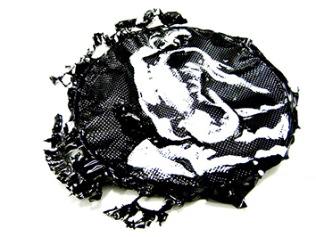

Manifesto of And(Gleipnir)
Be aware that you will believe what you say.
You will be drawn into argument and opposition by your own tongue.
Replace all ‘buts’ with ‘ands’
See how it warms your ears
See how it can splash sunlight in your face and star lights up the sky
Replace all buts with ands
The concept is simple
Listen to what’s coming next…….
The mysteries are unravelling and need to be renewed
With fresher creative bonds
We need to be drawn back in the world of wonder
Where not every thing is explained away
To refresh the worlds of
Sweet dreams
Ideas
Possibilities
And mysteries
To reinvigorate the Gods
The wonders of belief
Replace all buts with ands
Turn the beat around
Paint the back of the moon
Sing for a pixie
And da da da
(The roots of the mountain have been exhumed by the mining giants
The beautiful woman plucks out her beard
Peg-leg Pussy stomps along on his carbon fibre prosthetic leg
The lung-fish blows a kiss
There’s the birds’ cough, the birds’ flew
And the bear rolls on his back.)
Renew the ties of Fenrir
Rise against the dollar drudge
Take up your tools and TWIST!
Replace all buts with ands
Will back the man in the moon
To sing us to sleep, and those others also
Please leave the but in butes butle butled butleries butlers butlery butles butling butt buttals butte butted butter butterball butterballs buttercups buttered butterfat butterfingered butterfingers butterfish buttonhole buttonholed buttonholer buttonholers buttonholing buttonhook buttonhooked buttonhooking buttonhooks buttoning buttonless buttons buttonwood buttony buttress buttressed buttressing butts buttstock buttstocks butty bututs butyl butylate butylated butylating butterflies butterfly butterflyers butterflying butterier butteries butteriest buttering butterless buttermilk butternut butters butterscotch butterweed butterweeds abut abutilon abutilons abutment abutments abuts abuttal abuttals abutted abutter abutters abutting antiscorbutic arbute abrutean arbutes arbutean arbutus arbutuses attributable attribute attributed attributes attributing attribution attributional attributive attributively attributives barbuts bellybuttons butadienes butane butanes butanol butanone butch butcher butchered butcheries butchering butcherly misattributed misattributing misattribution redistributive retribution retributive retributively retributively butchers butchery butches bute butane butenes buteo buteos butterworts buttery buttes butthole butties butting buttinski buttinskies buttinsky buttock buttocks button buttonballs buttonbush buttoned buttoner buttoners butylation contributory oxphenbutazone phenylbutazone polybutadiene postdebutante rambutan reattribute reattributed reattributes kibbutz kibbutzim kibbutznik krubut maldistribution misattribute retributory sacbuts reattributing reattribution rebut rebuts rebuttable rebuttal rebutted rebutter rebutters rebutting rebutton misattributions misbutton misbuttoned misbuttoning misbuttons misdistributions non- redistributes redistributing redistribution redistributional redistributionist redistributions rebuttoned rebuttoning rebuttons redistribute redistributed butylations butylene butyls butyral butyraldehydes butyrals butyrate butyric butyrins butyrophenones butyrous butyryl contribute contributes contributing contribution contributions contributive contributively contributor contriubtors contributory debut debutant debutante debutantes debutants debuted debuting debuts distributaries distributary distribute distributed distributes distributing distribution distributional distributions distributive distributively distributivities distributivity distributors distributorships ethanbutol hackbut hagbut halibut holibuts isobutane isobutylene keybuttons sackbut sagbuts scorbutic scuttlebutt subdebutante surrebutter tolbutamide tributaries tributary tribute tributes unattributable unattributed unbuttered unbutton unbuttoned unbuttoning unbuttons undistributed, and Ita Buttrose.
And rest……
Process, when accompli, twisting, replacing conversation.
